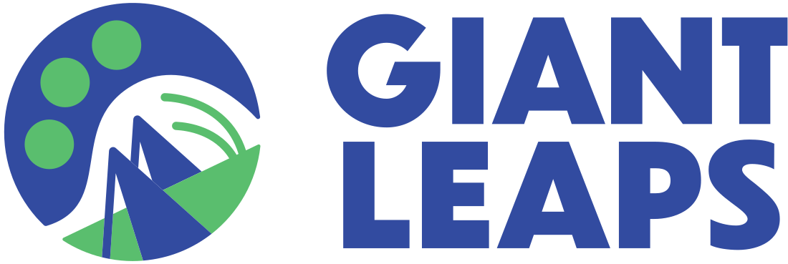
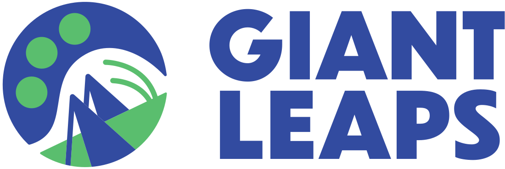

Overview
Bridge2Food’s Industry Surveys provide essential data on the sustainable food and protein sectors. Addressed to representatives across a range of technology and supply chain segments, these surveys allow monitoring of developments in food and agriculture economies not captured elsewhere.
Bridge2Food’s Industry Surveys have received funding from the European Union’s HORIZON EUROPE research and innovation programme under grant agreement No 101059632.
Methodology
Survey methodology follows that of the Business and Consumer Surveys conducted by the European Commission’s Directorate General for Economic and Financial Affairs, allowing for sector-level breakdowns of official industry statistics. While questionnaires are adapted for each technology and market segment, the macro-level focus areas remain comparable across surveys:
Production & Orders
Core metrics that define the operational health of businesses, reflecting demand dynamics and production efficiency. By examining these figures in the aggregate, stakeholders gain insights into the sector’s capacity utilization, supply chain performance, and market trends and cycles.
Inputs & Prices
Key data on the sector’s profitability and competitive landscape, reflecting impacts of economic conditions, regulatory changes, and industry resilience. This provides stakeholders with insights into the industry’s overall financial performance, enabling informed business and policy decisions regarding regulatory issues, resource allocations, and investment strategies.
Labour
Workforce dynamics indicators reflecting changes in industry employment and the impacts of labor market conditions. For policymakers, this information is essential for crafting labour regulations and training programs that support growth, while investors also benefit from understanding labour trends, which directly influence operational efficiency and profitability.
Investment & Innovation
Essential figures gauging capital expenditures and investments, reflecting the industry’s confidence in future growth and innovation potential. By monitoring spending trends, stakeholders can assess the sector’s medium and long-term outlook, while policymakers can use this information to design incentive structures that support industry needs.
Participating Companies
Participation in Bridge2Food’s Industry Surveys is by invitation only. Respondents are carefully selected and vetted to ensure aggregate indicators are accurate and representative of the sector.
Benefits for Respondents
Participating in Bridge2Food’s Industry Surveys offers exclusive benefits:
- Pre-public access to data releases and special reports
- Optional feature of company logo on data products
- Opportunity to provide feedback that can help guide future surveys and influence sector-wide policies
To express interest in participating in an Industry Survey, contact vincent.brain@bridge2food.com.
Security and Quality Control
Rigorous data collection and handling protocols are the foundation of data quality. To produce reliably accurate and representative indicators, the following measures are implemented:
- Aggregation: Survey responses are used exclusively to produce aggregate industry figures from which individual respondent data cannot be identified or inferred
- Security: Survey responses are collected via secure survey tools that maintain encryption during submission and storage
- Confidentiality: Raw survey data are kept strictly confidential and only made accessible to authorized team members for the purposes of analysis and quality control
We are committed to maintaining the highest standards of data integrity and confidentiality to protect data providers and ensure the reliability of our industry indicators.
The Data Problem
Few data sources are available for accurately quantifying and tracking developments in the sustainable food and protein industries:
- Government data collection schemes and reporting platforms are often geographically limited, and have yet to include figures for important product categories, such as plant-based milks, despite their ubiquity in retail and foodservice in many countries
- Figures and analyses provided by advocacy groups or private sector research may lack neutrality, technical rigor, or carry perceived bias, limiting their utility in contexts that demand broad inclusiveness and objectivity
Due to these constraints, policymakers and other stakeholders are often forced to make decisions based upon anecdotal or potentially biased information sources. Bridge2Food’s Industry Surveys provide a framework for evidence-based policy and strategic decisions in the sustainable food and protein sectors.
Surveys
| Industry Segment | Frequency | Next Release |
|---|---|---|
| Plant Protein Upstream Supplier (PPUS) Survey | Quarterly | January 20, 2025 |
| Plant Meat Producer (PMP) Survey | Quarterly | January 20, 2025 |
| Plant Dairy Producer (PDP) Survey | Quarterly | January 20, 2025 |
| Mycoprotein Producer (MPP) Survey | Quarterly | March 3, 2025 |
| Cell-Cultured Food Producer (CCFP) Survey | Quarterly | March 3, 2025 |
| Microbial & Recombinant Food Producer (MRFP) Survey | Quarterly | March 3, 2025 |
| Protein Technology Investor (PTI) Survey | Quarterly | March 3, 2025 |
| Industry Analyst (IA) Survey | Quarterly | March 3, 2025 |